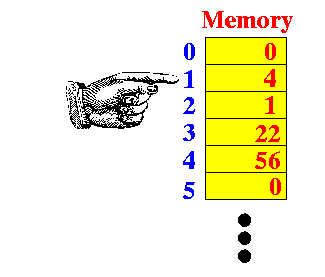
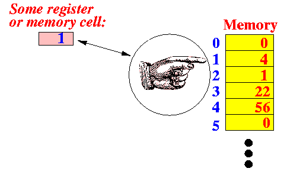
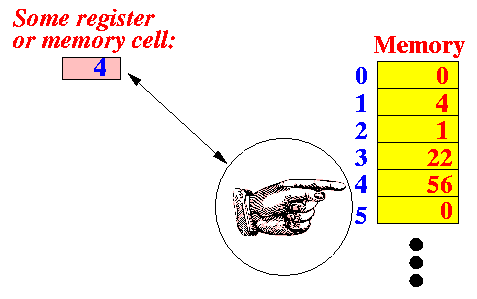
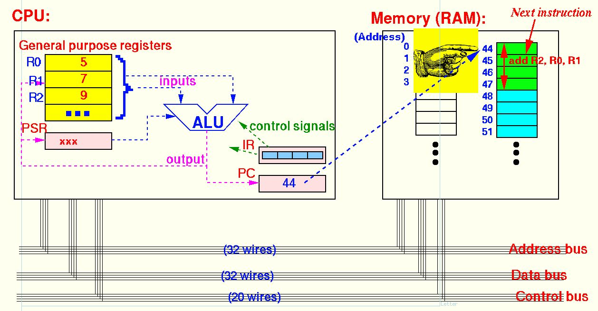

- You may or may have been exposed to
the reference concept in
CS170 and CS171.
But in CS255, we will use a lot of references
So I want to explain the (program) reference in greater detail before we move on.
- Program reference:
- A
program reference
(a.k.a. pointer )
is
"something" that references (= points)
to somewhere
Examples:
3 pointers or references to different directions 
- In Computer Science, a
reference always
references to
a location in memory
Examples:
Pointer to memory location 1 Pointer to memory location 4  
- A
program reference
(a.k.a. pointer )
is
"something" that references (= points)
to somewhere
- The computer does not have
"pointing fingers" that point
to some location in memory
The reference/pointer is represented in the computer by the value of the address (location) of the memory where the pointer is pointing at
Examples:
- Storing the
value 1
in some register/memory cell will
remember the memory location 1
- The value 1 in the register/memory cell is effectively pointing to the memory location 1
- Storing the
value 4
in some register/memory cell will
remember the memory location 4
- The value 4 in the register/memory cell is effectively pointing to the memory location 4
Reference to the memory location 1 Reference to the memory location 4   - Storing the
value 1
in some register/memory cell will
remember the memory location 1
- The program counter (PC) is
in fact a reference/pointer
Example:
- When the program counter (PC)
contains the value 44:

the program counter (PC) is in fact pointing to the memory location 44:

- When the program counter (PC)
contains the value 44: